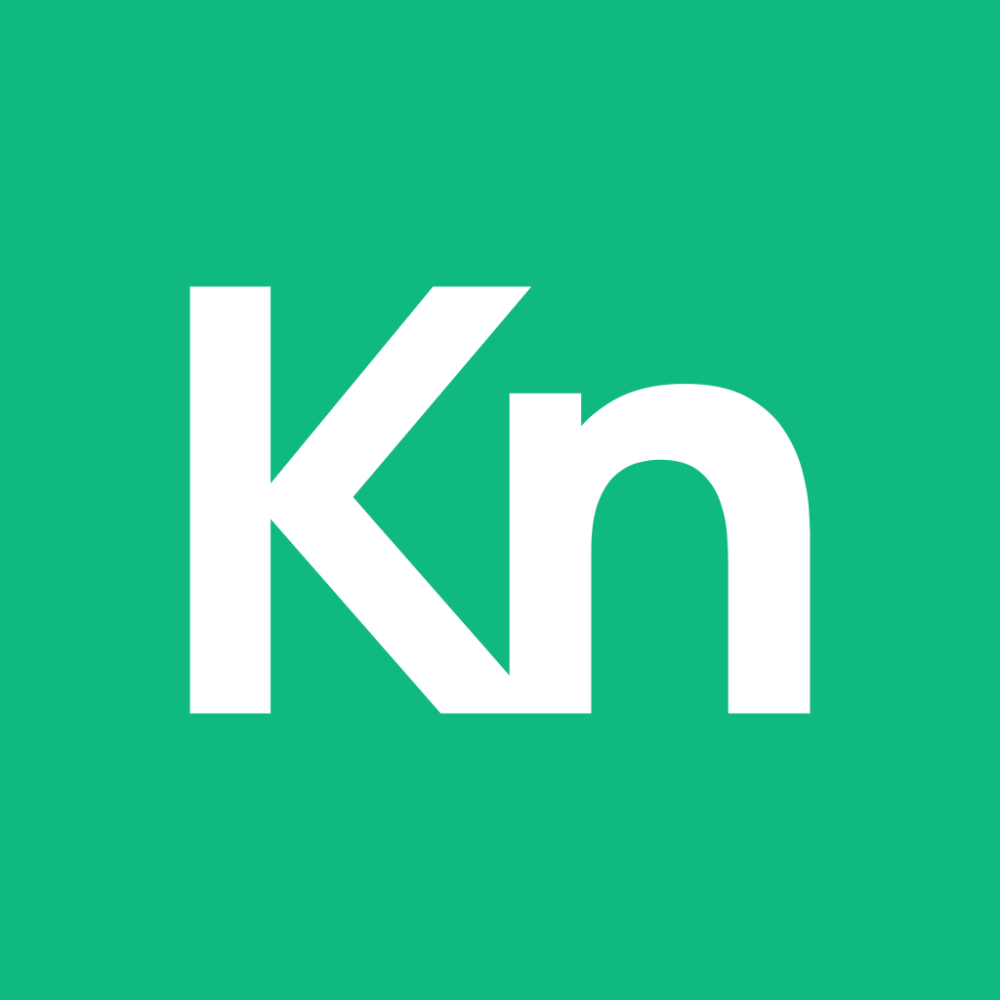

App icon · 1024 master
(shown with iOS rounding)
Wordmark W2 · white
Wordmark W2 · dark
Real outlines from Manrope ExtraBold. K and n merged into one shape, no font needed. Files: knect-kn-mark.svg, knect-app-icon-1024.svg/.png, knect-wordmark-white/dark.svg, knect-lockup-dark-bg.svg/.png